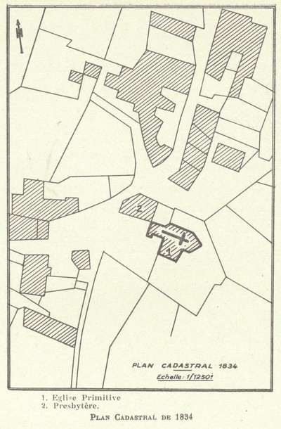
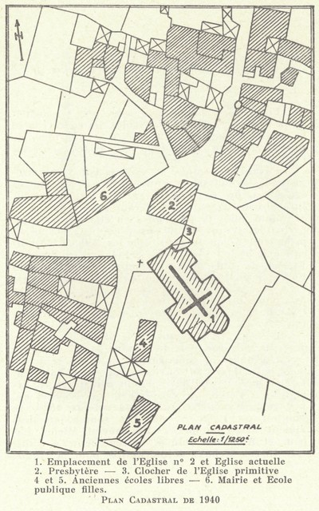
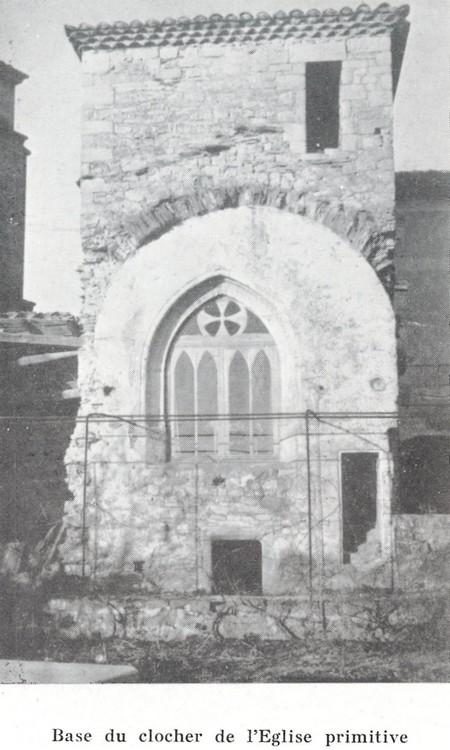

Saint-Privat ‒ L'Eglise
Les premiers fondements de l'église de Saint-Privat remontent à la fin du XI ème siècle. Il s'agissait alors d'une dépendance du prieuré d'Ucel, qui était rattaché à l'abbaye bénédictine de Saint-Chaffre.
Des chapelles y seront rapportées au XV ème et au XVI ème siècle. Au début du XVIII ème siècle elle disposait de 4 chapelles.
En 1962, à l'occasion des 100 ans de l'église de Saint-Privat, l'abbé Joseph Brun — alors curé de Saint-Privat depuis novembre 1957 — a consacré un petit livret à l'histoire des trois églises de Saint-Privat.
Table des matières
- Introduction
- L'église primitive
- L'église n° 2
- L'église actuelle

Introduction
En cette année 1962, au cours de laquelle nous allons fêter le centenaire de notre église, notre désir serait d'évoquer les détails de sa construction pour rappeler les soucis qu'elle a causés et par conséquent la faire mieux aimer, si possible, par les paroissiens de St Privat.
Au préalable, il sera nécessaire d'indiquer au moins brièvement ce que furent les deux églises précédentes et quelles furent leurs vicissitudes, pour mieux faire saisir pourquoi et comment on a été amené à construire en 1862 l'église actuelle.
Nous terminerons cet exposé en donnant la liste des curés de St Privat de 1677, nous n'avons pu remonter plus haut, jusqu'à nos jours.
Daigne St Privat, patron de la paroisse, nous aider dans l'élaboration de ce travail, revu par Monsieur l'Abbé Charray que nous remercions bien vivement. Il nous a en effet fourni des suggestions qui nous ont été précieuses.
L'église primitive
La vieille église de St Privat qui existait encore en 1840 était bien modeste et en bien mauvais état.
Elle n'avait que 14 mètres de longueur sur 13 de large à la hauteur des chapelles, mais 4 seulement dans la nef. Elle avait une tribune, mais qui menaçait ruine : à tel point qu'il fallait l'étayer à chaque solennité de peur d'un accident.
Elle était recouverte de lauzes, posées directement sur les voûtes. Celles-ci étaient une source de gouttières qu'il était à peu près impossible d'enrayer ; d'où des suintements qui minaient l'édifice de plus en plus.
Une échelle en bois, et vraisemblablement extérieure, permettait d'accéder au clocher. D'autre part, le pavé était à 2 mètres au-dessous du niveau de la place et la porte d'entrée si étroite et si basse qu'il fallait se courber pour y pénétrer.

Notre vieille église était d'autre part de forme bien bizarre, ainsi qu'on pourra s'en rendre compte d'après le croquis de la page 6, avec en regard celui de l'église actuelle.

De quand datait-elle ? Nul ne le sait. Ce qui est certain, c'est qu'elle fut plusieurs fois remaniée au cours des siècles. Remarquons cependant que la base du clocher (1), existant encore près de la cure et qui a été restaurée en 1959, possède une belle ogive du XV° siècle. Cette base du clocher a ceci de particulier qu'elle comprenait deux escaliers partant de deux faces opposées, mais se rejoignant au sommet et desservant la même entrée ; l'un de ces escaliers, pris dans l'intérieur du mur (2), débouchait à l'intérieur de l'église, l'autre, à l'extérieur. Celui-ci a été refait en 1959 mais l'autre existe toujours dans son état primitif et l'extrême usure de ses marches montre bien qu'il a servi des générations de paroissiens.

D'assez nombreuses discussions s'élevèrent pour savoir s'il fallait réparer cette église... ou la démolir pour en édifier une nouvelle, beaucoup plus spacieuse. Dans l'impossibilité où l'on se trouvait d'agrandir l'ancienne, on se résolut entre 1838 et 1840 à la démolir purement et simplement et d'en construire une autre.
C'est de celle-ci, que nous appellerons l'église n° 2 que nous allons parler maintenant.
L'église n° 2
Fin 1836, l'abbé Hugon avait pris possession de la cure de St Privat. Il résolut, de concert avec le conseil municipal et le conseil de fabrique, de faire ériger une église digne de l'Hôte qui devait l'habiter.
Payant d'exemple, il se dessaisit volontairement de la jouissance d'un terrain sis au Charnivet, en nature de prés et mûriers, la grande culture à cette époque. Ce terrain appartenait à la commune, mais la jouissance en était réservée au prêtre desservant. D'une superficie de 2.592 m², il produisait 27 quintaux de feuilles. Mis en adjudication le 9 août 1840, il fut acheté par M. Jacques Délière du Buis, arrière-grand-père de M. André Fournier du Pont-Vieux, au prix de 4.500 francs. Ce dernier a échangé il y a peu d'années ce terrain avec un autre appartenant à M. Jean Tourette. C'est donc ce dernier qui en est l'actuel propriétaire.
De son côté, la municipalité fit vendre un titre de rente qui produisit une dizaine de mille francs.
L'adjudication des travaux de l'église eut lieu le 22 novembre 1840 sous la direction du maire, M. Louis Cassagne. Le devis, établi par M. Nègre, architecte à Privas (dressé le 18 février 1838 et approuvé par la Préfecture le 14 octobre 1840) se montait à 21.286 fr. 88. Les soumissionnaires étaient assez nombreux. Finalement Michel Lacour et Ambroise Dumas, entrepreneurs à Aubenas, furent déclarés adjudicataires pour la somme de 19.425 fr. En réalité, le montant des travaux fut de 22.245 fr. 25.
L'on n'avait pas attendu cette date pour se mettre au travail puisque l'extraction des pierres destinées à la construction de la future église avait commencé dès le 25 mars de cette année 1840. Dès la mise en adjudication, c'est-à-dire fin novembre, on commença les fondations.
Les travaux se continuèrent au cours des années 1841 et 1842. En juin de cette année, le gros œuvre était terminé, si bien que le 8 décembre M. Hugon fit transférer dans l'enceinte de la nouvelle église les restes de M. Jaussoin, qui avait été curé de St Privat durant 63 ans. Mais on peut dire que l'église ne fut réellement finie qu'au cours du premier trimestre 1843. Elle ne possédait cependant ni tribune (faite seulement en 1844) ni clocher.
Au cours de 1841, M. Hugon avait déjà commandé à MM. Baussans et Bouvas, marbriers à Bourg-St-Andéol, le maître-autel pour le prix de 2.930 fr., plus 135 fr. pour les marches, et en janvier 1843 arriva un tableau représentant la Vierge et l'Enfant Jésus peint par M. Boulanger et offert par le ministère des Beaux-Arts.
Le 2 avril 1843, M. le chanoine Thouez, curé-archiprêtre d'Aubenas, érigea le Chemin de Croix dans la nouvelle église, qui fut solennellement bénite le 25 novembre par Mgr. Guibert évêque de Viviers, futur archevêque de Tours et cardinal-archevêque de Paris.
Nous ne pouvons résister au plaisir de donner « in extenso » le procès-verbal de cette cérémonie, tous les détails pouvant intéresser nos lecteurs.
L'an mil huit cent quarante-trois et le vingt-cinq novembre, un samedi, à quatre heures du soir, tous les habitants de la paroisse de St Privat ont été recevoir au village de Feugier Monseigneur Joseph Hippolyte Guibert, évêque de Viviers. — Sa Grandeur a été accompagnée en procession jusqu'à l'église, elle a été complimentée au village du Buis par M. Cassagne maire de la commune sous un bel arc de triomphe dressé par les habitants, et à la porte de l'église par M. Hugon, curé de la paroisse. Monseigneur est monté en chaire, a adressé des félicitations sur la magnifique réception que la Paroisse venait de lui faire, a annoncé les cérémonies du lendemain et a terminé la journée par la bénédiction du St Sacrement. M. le maire, M. l'adjoint et les deux capitaines de la garde nationale ont soupé avec Sa Grandeur. Le 26, dimanche, la cérémonie a commencé à 7 1/2 du matin. Monseigneur a donné le sacrement de Confirmation à six cents personnes (1) et la Ste Communion à neuf cent quarante fidèles. A deux heures après midi, Monseigneur a fait la bénédiction solennelle de la nouvelle église en présence de toutes les autorités, de tous les paroissiens, d'un nombre très considérable de fidèles des paroisses voisines, d'un nombreux clergé composé de MM. Gervais grand Vicaire, Bicherond grand Vicaire, Mayaud chanoine et ancien secrétaire général de l'Evéché, Chabal chanoine, Thouez curé d'Aubenas chanoine honoraire, Champanhet chanoine honoraire et ancien curé de St Privat, Rivière chanoine honoraire et aumônier du couvent de la Visitation de Montélimar, Géry chanoine honoraire, supérieur des Frères de l'Instruction chrétienne, faisant les fonctions de secrétaire de Monseigneur, Tailhand curé de Vaisseaux, Besson curé de Vals, Maurin curé de St Etienne-de-Fontbellon, Mathon curé du Pont d'Aubenas, Jacquin vicaire d'Aubenas, Sonier vicaire de Vaisseaux, Augier prêtre au Pont d'Aubenas et du savant abbé Paramelle, l'illustre hydroscope de France. M. Chabal a fait le discours. Monseigneur est encore monté en chaire. La cérémonie a été terminée par la bénédiction du St Sacrement. Le lundi 27 novembre, Monseigneur après sa messe a été bénir solennellement le cimetière en présence de toutes les autorités et des fidèles. A son retour, il a fait la visite de l'église, est monté en chaire, a parlé pendant trois quarts d'heure et a terminé la cérémonie par la bénédiction du St Sacrement. A midi Sa Grandeur a béni dans l'église tous les enfants de la Paroisse. Monseigneur a quitté la paroisse à trois heures, au son de la cloche et les autorités avec la garde nationale l'ont accompagné jusqu'au Pont d'Aubenas.
Fin 1845 et début 1846, on érigea un clocher, non pour abriter la cloche qui avait salué l'arrivée de Mr Guibert, car entre temps elle s'était cassée, mais pour en mettre une nouvelle, — celle-là même qui appelle encore aujourd'hui les fidèles aux offices paroissiaux —, qui fut commandée à M. Gédéon Morel, fondeur de cloches à Lyon. Elle fut solennellement bénite le 11 janvier 1846 par M. le chanoine Adolphe Champanhet, ancien curé de St-Privat. Elle porte les inscriptions suivantes :
Laudate Dominum in cymbalis bene sonantibus — Marie conçue sans péché priez pour nous O M S — Le parrain M. Eugène Tourrette, la marraine Mme St Denis née Dumas — Elle s'appelle Marie Anne Eugénie — St Privat — Curé de St Privat M. Hugon. Maire Cassagne — Vox exultationis et salutis in tabernaculis justorum — M. Gédéon Morel fondeur à Lyon.
Cette cloche pèse 685 kg. Et a coûté 2.148,05 francs, déduction faite de la vieille cloche qui fut reprise par le fondeur et qui ne pesait que 170 kg.
L'abbé Hugon avait déjà fait prêcher une mission en 1844, en souvenir de laquelle fut plantée le 29 décembre la belle Croix qui se trouve sur la place devant l'Eglise et dont la reproduction figure sur la couverture de la présente plaquette, exécutée par l'artiste Jean Chièze. Mais, à l'occasion d'un Jubilé accordé par le Pape Pie IX, une retraite fut prêchée par les RR.PP. Lhermite et Chauliac, Oblats de N.D. de Bon Secours, du 21 mars au 11 avril 1847.
En reconnaissance de tout ce qu'il avait fait pour la paroisse, l'abbé Hugon, trois mois après, c'est-à-dire en juillet 1847, était nommé curé-archiprêtre de Rochemaure.
Il fut remplacé par M. l'abbé André Bernard à qui il laissa, malgré les apparences, une bien pénible succession ainsi que nous allons le voir un peu plus loin.
Le premier souci de M. l'abbé Bernard fut d'achever l'ameublement de l'église : il fit faire des boiseries, achet en 1852 l'autel de la Ste Vierge au prix de 1.200 fr, toujours aux établissements Baussans et Bouvas, ainsi que celui de St Joseph trois ans après. Entre temps, en 1843, il avait aussi doté l'église d'une chaire.
- On sera sans doute étonné de ce nombre qui paraît considérable mais ainsi que le fait remarquer l'Abbé Roche dans son Armorial — livre 2, page 377 — « Depuis son rétablissement, en 1823, le diocèse avait eu deux évêques dont l'un n'avait fait que passer et dont l'autre, vieillard infirme, n'avait pu qu'imparfaitement rempli sa tâche difficile. Ainsi, dans beaucoup de paroisses, bien des fidèles n'avaient jamais vu d'évêque et un grand nombre d'adultes n'avaient pas reçus le sacrement de Confirmation ».